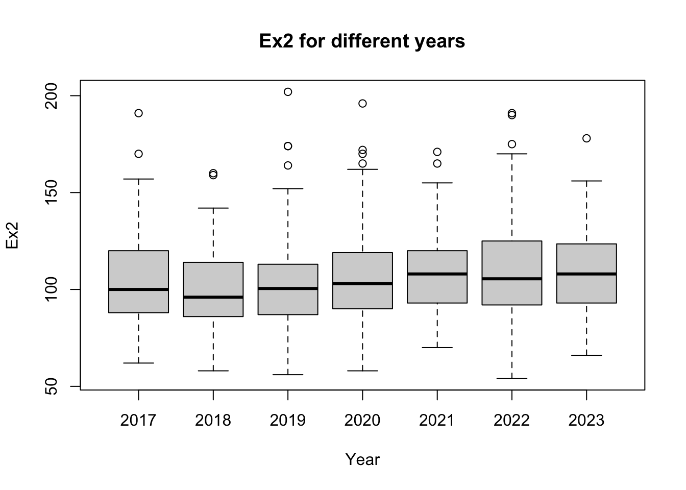
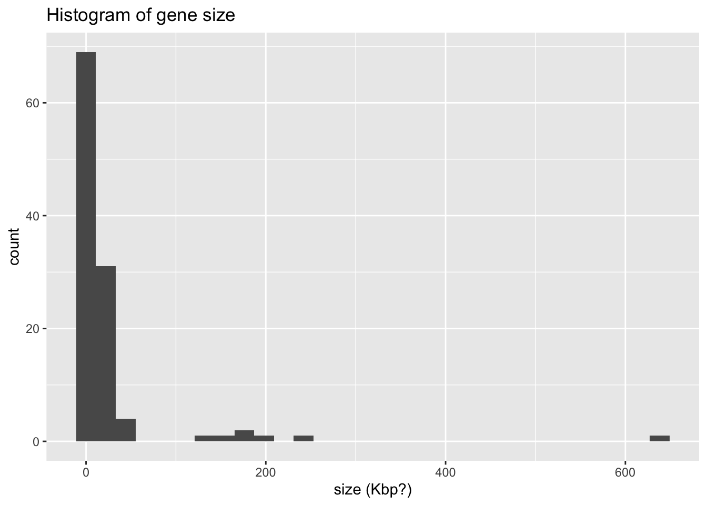

The goal of this assignment is to introduce basic data description and visualization using base R and tidyverse packages. Specifically, you should be able to:
Read in a data set as a data frame (or tibble) and report the number and types of variables, as well as the number of observations.
Visualize a variable using a method appropriate for its type; observe the general shape of the distribution.
Report descriptive statistics (e.g. counts, means, standard deviations) for numeric variables and generate cross tables for categorical variables.
Perform an assessment of missing values and outliers and do basic data cleaning.
These are the first steps that one needs to do to begin working with a data set. Below you will see several real data sets to practice on.
Heart rates
The following data set contains heart rates measured and reported by students in my class Introduction to Quantitative Modeling for Biology. There are four different heart rates measured (two at rest and two after exercise) and the year it was measured.
Rows: 1068 Columns: 5
── Column specification ────────────────────────────────────────────────────────
Delimiter: ","
dbl (5): Rest1, Ex1, Rest2, Ex2, Year
ℹ Use `spec()` to retrieve the full column specification for this data.
ℹ Specify the column types or set `show_col_types = FALSE` to quiet this message.
Report the number and types of variables and the number of observations
There are 5 variables (columns), of which 4 are numeric and the 5th (year) is (arguably) categorical (even though it’s a number, it’s not meant for calculations).
Make a histogram of one of the numeric variables of your choice; describe its shape (e.g. normal, uniform, bimodal) and comment on any interesting features.
# base R:hist(heart_rates$Ex2, main ='Histogram of Ex2', xlab ="heart rate (bpm)")
`stat_bin()` using `bins = 30`. Pick better value with `binwidth`.
The graph is fairly normal-shaped, but with a longer right tail.
Compute the counts, means, and standard deviations of one of the numeric variables of your choice, separated by Year category.
# base Ryear_list =unique(heart_rates$Year)for (year in year_list) { slice <- heart_rates$Year == yearprint(paste("In year", year, "number of observations of Ex2 is:", length(heart_rates$Ex2[slice])))print(paste("In year", year, "mean value of Ex2 is:", mean(heart_rates$Ex2[slice])))print(paste("In year", year, "standard deviation of Ex2 is:", sd(heart_rates$Ex2[slice])))}
[1] "In year 2017 number of observations of Ex2 is: 106"
[1] "In year 2017 mean value of Ex2 is: 104.650943396226"
[1] "In year 2017 standard deviation of Ex2 is: 24.0875555512564"
[1] "In year 2018 number of observations of Ex2 is: 137"
[1] "In year 2018 mean value of Ex2 is: 99.7956204379562"
[1] "In year 2018 standard deviation of Ex2 is: 19.9496198865938"
[1] "In year 2019 number of observations of Ex2 is: 170"
[1] "In year 2019 mean value of Ex2 is: 101.976470588235"
[1] "In year 2019 standard deviation of Ex2 is: 22.229292722108"
[1] "In year 2020 number of observations of Ex2 is: 172"
[1] "In year 2020 mean value of Ex2 is: 106.273255813953"
[1] "In year 2020 standard deviation of Ex2 is: 22.6945335635076"
[1] "In year 2021 number of observations of Ex2 is: 161"
[1] "In year 2021 mean value of Ex2 is: 108.049689440994"
[1] "In year 2021 standard deviation of Ex2 is: 19.844017121741"
[1] "In year 2022 number of observations of Ex2 is: 182"
[1] "In year 2022 mean value of Ex2 is: 109.21978021978"
[1] "In year 2022 standard deviation of Ex2 is: 24.8639623382085"
[1] "In year 2023 number of observations of Ex2 is: 140"
[1] "In year 2023 mean value of Ex2 is: 110.078571428571"
[1] "In year 2023 standard deviation of Ex2 is: 21.8068921377415"
Visualize one of the numeric variables as a box plot or violin plot, separated by different years.
# base Rboxplot(Ex2 ~ Year, data = heart_rates, main="Ex2 for different years")

# ggplotheart_rates |>ggplot() +aes(x=as.factor(Year), y = Ex2) +geom_boxplot() +ggtitle("Ex2 for different years") +xlab("year")
Report if there are any missing values and if any points may be considered outliers.
# base R to calculate by columncat("The number of NAs in each column: ")
The number of NAs in each column:
cat(colSums(is.na(heart_rates)))
0 0 0 0 0
cat("\n")
# tidyverse to calculate by rowheart_rates %>%rowwise() %>%mutate(sum_na =sum(is.na(c_across())))
Warning: There was 1 warning in `mutate()`.
ℹ In argument: `sum_na = sum(is.na(c_across()))`.
ℹ In row 1.
Caused by warning:
! Using `c_across()` without supplying `cols` was deprecated in dplyr 1.1.0.
ℹ Please supply `cols` instead.
The following data set comes from https://github.com/lauringlab/JVI_Gem_2018 and contains measurements of different viral species. The three numeric variables are evolutionary rate K, mutation rate mu, and genome size G. The categorical variables are fairly self-explanatory.
Rows: 111 Columns: 11
── Column specification ────────────────────────────────────────────────────────
Delimiter: ","
chr (7): group, family, virus, K reference (Sanjuan 2012), Full K reference,...
dbl (3): G, K, mu
lgl (1): Included in 2018 publication
ℹ Use `spec()` to retrieve the full column specification for this data.
ℹ Specify the column types or set `show_col_types = FALSE` to quiet this message.
Report the number and types of variables and the number of observations
11 columns, of which 3 are numeric: G, K, mu, one logical, and the rest are categorical, 111 observations
Make a histogram of one of the numeric variables of your choice; describe its shape (e.g. normal, uniform, bimodal) and comment on any interesting features.
# base R:hist(viral_mut_rates$G, main ='Histogram of gene size', xlab ="size (Kbp?)")
`stat_bin()` using `bins = 30`. Pick better value with `binwidth`.

Compute the counts, means, and standard deviations of one of the numeric variables of your choice, separated by group category.
# base Rgroup_list =unique(viral_mut_rates$group)for (g in group_list) { slice <- viral_mut_rates$group == gprint(paste("In group", g, "number of observations of G is:", length(viral_mut_rates$G[slice])))print(paste("In group", g, "mean value of G is:", mean(viral_mut_rates$G[slice])))print(paste("In group", g, "standard deviation of G is:", sd(viral_mut_rates$G[slice])))}
[1] "In group dsDNA number of observations of G is: 14"
[1] "In group dsDNA mean value of G is: 134.102857142857"
[1] "In group dsDNA standard deviation of G is: 166.383421531232"
[1] "In group dsRNA number of observations of G is: 6"
[1] "In group dsRNA mean value of G is: 17.2666666666667"
[1] "In group dsRNA standard deviation of G is: 6.79719255771577"
[1] "In group retro number of observations of G is: 9"
[1] "In group retro mean value of G is: 7.96111111111111"
[1] "In group retro standard deviation of G is: 3.16570467844224"
[1] "In group ss_neg_RNA number of observations of G is: 15"
[1] "In group ss_neg_RNA mean value of G is: 14.2"
[1] "In group ss_neg_RNA standard deviation of G is: 2.48985082743066"
[1] "In group ss_pos_RNA number of observations of G is: 55"
[1] "In group ss_pos_RNA mean value of G is: 10.0505454545455"
[1] "In group ss_pos_RNA standard deviation of G is: 6.5925834924085"
[1] "In group ssDNA number of observations of G is: 12"
[1] "In group ssDNA mean value of G is: 4.68"
[1] "In group ssDNA standard deviation of G is: 1.52453271529344"
Rows: 498 Columns: 24
── Column specification ────────────────────────────────────────────────────────
Delimiter: ","
chr (2): sample id, high_risk
dbl (22): MYCN, STC1, P4HA1, BHLHE40, HIF1A, ELVIDGE_HIF1A_TARGETS_UP, Quies...
ℹ Use `spec()` to retrieve the full column specification for this data.
ℹ Specify the column types or set `show_col_types = FALSE` to quiet this message.
Report the number and types of variables and the number of observations
There are 24 columns, of which 22 are numeric, and two are categorical: sample id is a unique id so it won’t be used in calculations, and high_risk is a logical variable (yes/no)
Compare the distributions of two or more of the numeric variables of your choice using boxplots or other visualizations; describe how the distributions differ.
# base R:hist(neuro_blast$MYCN, main ='Histogram of MYCN', xlab ="size (Kbp?)")
# ggplotneuro_blast |>ggplot() +aes(x=MYCN) +geom_histogram() +ggtitle('Histogram of MYCN') +xlab("MYCN")
`stat_bin()` using `bins = 30`. Pick better value with `binwidth`.
The histogram of MYCN is very non-normal, the biggest peak is at 0, with a long tail of higher values.
Compute the counts, means, and standard deviations of one of the numeric variables of your choice, separated by high_risk category.
# base Rrisk_list =unique(neuro_blast$high_risk)for (risk in risk_list) { slice <- neuro_blast$high_risk == riskprint(paste("In group", risk, "number of observations of G is:", length(neuro_blast$MYCN[slice])))print(paste("In group", risk, "mean value of G is:", mean(neuro_blast$MYCN[slice])))print(paste("In group", risk, "standard deviation of G is:", sd(neuro_blast$MYCN[slice])))}
[1] "In group yes number of observations of G is: 176"
[1] "In group yes mean value of G is: 550.603602272727"
[1] "In group yes standard deviation of G is: 616.077018482528"
[1] "In group no number of observations of G is: 322"
[1] "In group no mean value of G is: 56.7189099378882"
[1] "In group no standard deviation of G is: 54.1659434545841"